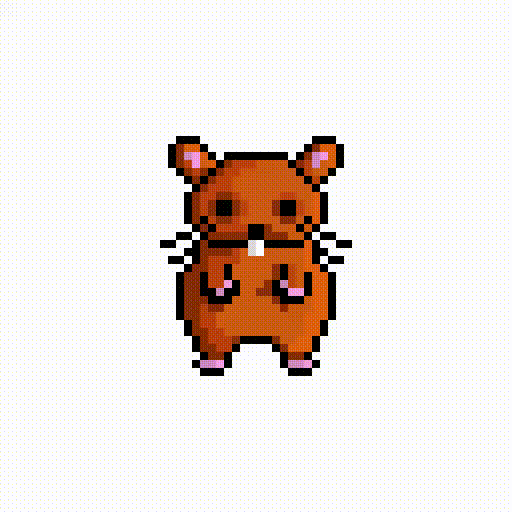
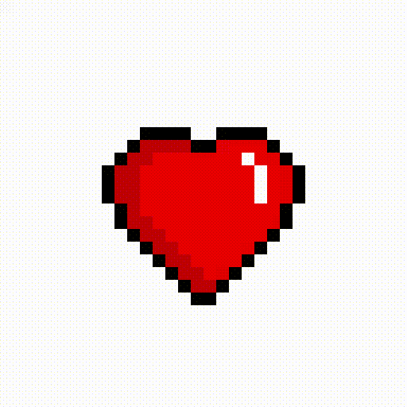

Project Violet'e Hoş Geldiniz
Önümüzde keşfedilmeyi bekleyen devasa bir dünya, yazılmayı bekleyen hikâyeler ve gün yüzüne çıkmayı bekleyen sayısız fikir var. Bugün gördüğünüz şey, yalnızca başlangıç.
Masalların gerçeğe, efsanelerin koda dönüştüğü bu uzun yolculukta, projenin ilk adımlarına tanıklık etmenizden heyecan duyuyorum. Zamanla bu küçük girişim; kendi dünyası, karakterleri, hikâyeleri ve sırlarıyla gerçek bir maceraya dönüşecek.
ProjectViolet isminin arkasındaki gizem şimdilik saklı kalacak. Karanlık ve büyünün iç içe geçtiği bu epik sürecin her aşamasını paylaşmak ve bunu sıfırdan birlikte inşa etmek en büyük heyecanım. Desteğiniz için teşekkürler <3
V0.5 Yaması Hazır!
04 Eylül 2026- Logo ve faviconlar güncellendi
V4.0: SİTE KULLANIMA HAZIR!
3 Eylül 2026Sihir parçacıkları aktif!
☆<(￣︶￣)>

" class="yama-resmi">V0.3: Görsel Düzeltmeler
3 Eylül 2026- Bozuk Arkaplan Düzeltildi: Ana çerçeve görselinin dosya yolu sorunu çözüldü.
- Logo Optimizasyonu: Logo artık tüm ekranlarda çerçevenin tam merkezine oturuyor.
- Ölçekleme Düzeltildi: Mobil ve masaüstü artık birebir aynı oranda ölçekleniyor.
- Düzen Kayması Engellendi: Görseller yüklenirken sayfanın zıplaması engellendi.
- Render Hatası Çözüldü: Chrome'daki siyah çizgi ve dil değiştirme sorunları giderildi.
V0.2:
3 Eylül 2026Project Violet web sitesinin 0.2 sürümü yayınlandı!
- Yama kutuları eklendi.
- Başlıklar ve kronolojik tarihler güncellendi.
- Project Violet logosu eklendi.

V0.1: Açılış
3 Eylül 2026- Project Violet resmi web sitesi başarıyla yayına alındı.
- Sisteme ilk kayıtlar düşüldü.
- Duyuru sitesi aktif edildi ve oyun geliştirme süreci resmen başladı!